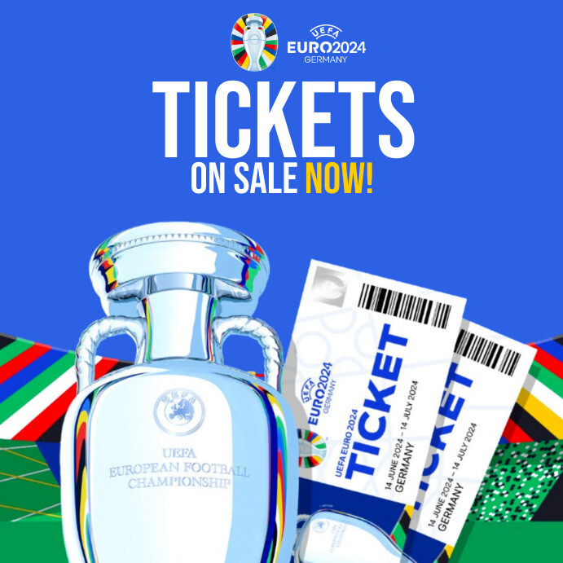
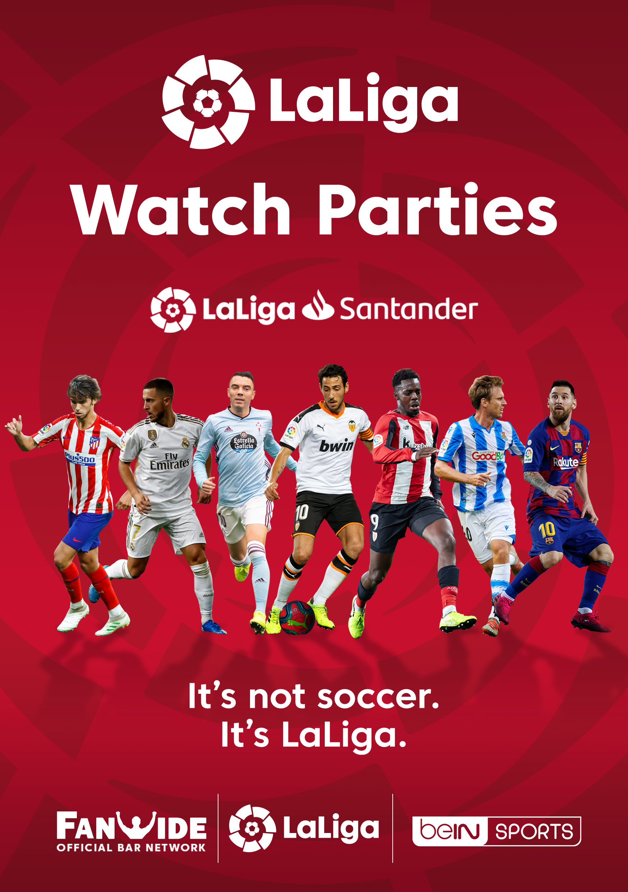

Не пропустіть шанс відвідати найзахоплюючіші футбольні матчі сезону!
Придбайте квитки на два матчі та отримайте знижку 15% на наступний придбаний квиток!
Не втрачайте свій шанс! Акція обмежена часом!
У Реала буде два Мбаппе? Кіліан попросив клуб підписати його родича. Нападник Кіліан Мбаппе продовжить грати за французький «ПСЖ» до завершення сезону-2023/2024, після чого, як очікується, перейде до мадридського «Реала».
Останнім часом дуже багато чуток ходить про те, що український голкіпер мадридського «Реала» Андрій Лунін залишить клуб улітку, оскільки місце у воротах «вершкових» займе бельгієць Тібо Курута.
Однак, як повідомляє видання DefensaCentral, яке спеціалізується на новинах про столичну команду Іспанії, Лунін не має наміру йти.
Джерело стверджує, що президент Реала Флорентіно Перес знає, що хоче Лунін. Андрій виявив бажання залишитися в колективі, а також чекає на пропозиції нового контракту.
Королівський клуб міг вирвати перемогу на 90+9-й хвилині, оскільки Джуд Беллінгем зумів відправити м'яч у ворота господарів, однак до навісу з флангу, з якого і відзначився англієць, суддя дав фінальний свисток, тому забитий м'яч не було зараховано. Беллінгем бурхливо відреагував рішення рефері: «f*king goal». У результаті Джуд був покараний за «ставлення зневаги чи неуважності до суддів, менеджерів чи спортивної влади» та усунений на 2 матчі у Ла Лізі. Також англієць має заплатити 600 євро штрафу, а «Реал» – 700 євро.